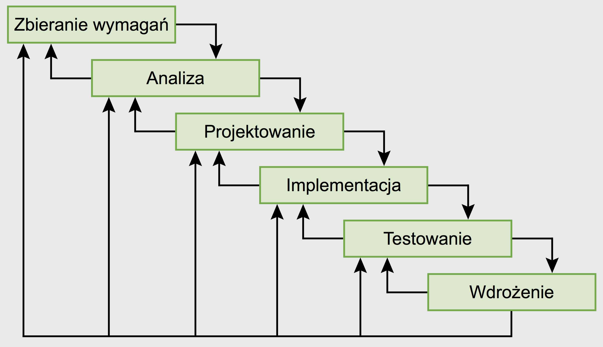

# Srodowiska i narzedzia wytwarzania oprogramowania - wyklad 3 <img src="./pipeline.jpg" width="700"> <!--http://developers.redhat.com/blog/2016/09/14/microservices-cicd-pipelines-in-openshift/--> --- ### git clone & git pull vs. git fork & git pull request - strategia 'fork and branch' <!--mozna uzywac narzedzi dedykowanych jak gerrit ale mozna tez narzedzi wbudowanych w np. GitHuba jak pull request, schemat, roznica pomiedzy klonowaniem i wysylaniem zmian do repozytorium do ktorego mammy prawo pisac a rozwidlaniem i wysylaniem propozycji zmian--> <!--http://sebastien.saunier.me/blog/2014/04/21/practical-example-of-using-git-in-a-school.html--> --- ### git clone & git pull vs. git fork & git pull request <img src="./github1.png" width="650"> <!--http://www.dataschool.io/simple-guide-to-forks-in-github-and-git/--> - `pull requests` @ GitHub, merging requests --- ### Zarzadzanie projektami (ogolne zasady) - strategia, H.K.B. von Moltke > "Jak mozna w ogole napisac ksiazke o strategii? Przeciez strategia to po prostu stosowanie zdrowego rozsadku, a tego nikogo nie mozna nauczyc" - zdrowy rozsadek nie zawsze wystarczy..., H. Emerson, [Dwanaście zasad wydajności](http://www.bibliotekacyfrowa.pl/Content/64467/PAd_339530.pdf), 1912 1. Jasno okreslony cel 2. Zdrowy rozsadek 3. Fachowa rada 4. [...](https://mfiles.pl/pl/index.php/Harrington_Emerson) - 'organization and pre-planning', A. Gawande, [The Checklist](http://www.newyorker.com/magazine/2007/12/10/the-checklist), *New Yorker 2007-12-10* > "If something so simple can transform intensive care, what else can it do?" --- ### Zarzadzanie projektami informatycznymi - zespol & przydzial zadan - wybor narzedzi (w tym jezykow programowania) - moduly/zadania projektu, 'milestones', - sciezki krytyczne > sciezka krytyczna = najdluzszy ze wszystkich mozliwych ciagow chronologicznie ulozonych zadan takich, ze kazde nastepne nie moze sie rozpoczac, dopoki poprzednie sie nie skonczy - schematy dzialania, 'worst case scenario' --- ### Kaskadowy ('waterfall') cykl zycia oprogramowania - rozlegla faza zbierania wymagan - analizy i projektowanie - kodowanie - testowanie - dostarczenie klientowi gotowego produktu  <!--http://streser.nazwa.pl/testydoc/!ciekawe/Przegl%B9d%20modeli%20cyklu%20%BFycia%20oprogramowania.pdf--> Wada: końcowy system może się zupełnie rozminąć z potrzebami klienta --- ### Iteracyjny cykl zycia --- ## Cykl zycia typu V --- ### Spiralny cykl zycia --- ### Syndrom LOOP, lata 1980-1990 - coraz bardziej zlozone oprogramowanie - <span style="background-color: #FFFF00">L</span>ate - <span style="background-color: #FFFF00">O</span>ver budget - <span style="background-color: #FFFF00">O</span>vertime - <span style="background-color: #FFFF00">P</span>oor quality - rozwiazanie: wiecej dyscypliny? --- ### Metodyka 'tradycyjna' zorientowana na procedury - sztywne procedury: - standardy jakosci, ISO 9000 & audytor - plany przedsiewziec - szacowanie kosztu, harmonogramy,... - planowanie zapewnienia jakosci - narzut administracyjny - skupienie na procesie a nie jakosci produktu! - dyscyplina zabija inicjatywe i elastycznosc! --- ### Lekkie/zwinne metodyki - 'Agile manifesto', 2001 > Wazniejsze: 1. Jednostki i interakcje niz procesy i narzędzia 2. Dzialajace oprogramowanie niż obszerna dokumentacja 3. Wspolpraca klienta niż negocjacja kontraktu 4. Nadazanie za zmianami niz trzymanie się planu - przklady zastosowan: Scrum, Kanban --- ### Ekstremalne programowanie (XP) - wartosci - komunikacja - glownie werbalna - wymagania - relacje z klientem - prostota - najpierw najprostsze rozwiazania - potem refaktoryzacja - sprzezenie zwrotne (testy) - odwaga dzialania - przestrzeganie zasad kodowania - nie anagazowanie sie w projektowanie - refaktoryzacja - usuwanie zbednego kodu - szacunek czasu i pracy innych Praktyki XP: (struktura zespolu, relacje z klientem, zapewnienie jakosci, programowanie parami) --- ### Ekstremalne programowanie (XP) <!--http://wazniak.mimuw.edu.pl/index.php?title=Io-12-wyk-Slajd31--> - Czynniki ryzyka - klient caly czas pracuje z zespolem - brak dokumentacji - brak fazy projektowania - krotka perspektywa planowania --- ### 'Ekstremalne' wersje XP - Test Driven Development (TDD) - "programista zaczyna od pisania testow do funkcji, ktora jeszcze nie została napisana" - Behavior Driven Development (BDD) - polega na tworzeniu oprogramowania przez opisywanie jego zachowania, z perspektywy jego udzialowcow - zachowanie oprogramowania powinno byc zrozumiale zarowno dla zarowno programistow, jak i analitykow biznesowych oraz klientow - wszystko, co robimy ma niesc ze soba realna wartosc biznesowa --- ### Zarzadzanie wytwarzaniem oprogramowania Ogolny obraz metod i srodowisk wytwarzania oprogramowania - Procesy i ich automatyzacja - systemy kontroli wersji - kompilacja oraz ciagla integracja (CI) - testowanie, testy jednostkowe - ciagle wdrozenie (CD) - Infrastruktura ('no single point of failure', skalowalna, HPC/HA) - wirtualizacja srodowisk, maszyny wirtualne, zarzadzanie srodowiskiem wirtualnym - kontenery, Docker - mikroserwisy, mikroOSy - rozne poziomy uslug XaaS (IaaS, PaaS, ...) - 'Linia produkcyjna' (<span style="background-color: #FFFF00">pipeline</span>) oprogramowania = automatyzacja + 'aranzacja' (orchestation), czyli calosciowe zarzadzanie procesem wytwarzania oprogramowania --- ### Ciagla integracja (CI) & ciagle wdrozenie (CD) --- ### Ciagla integracja (CI) --- ### Ciagla integracja (CI) <img src="./CI-ideal.png" width="700"> --- ### Typowa 'linia produkcyjna' --- ### 'Linia produkcyjna' (<span style="background-color: #FFFF00">pipeline</span>) oprogramowania <img src="./heroku-i.png" width="800"> --- ### 'Linia produkcyjna' (<span style="background-color: #FFFF00">pipeline</span>) oprogramowania - Procesy - 'behind the scenes' ---> kurs Unixa --- ### 'Linia produkcyjna' (<span style="background-color: #FFFF00">pipeline</span>) oprogramowania - Infrastruktura - 'behind the scenes' ---> kurs Unixa